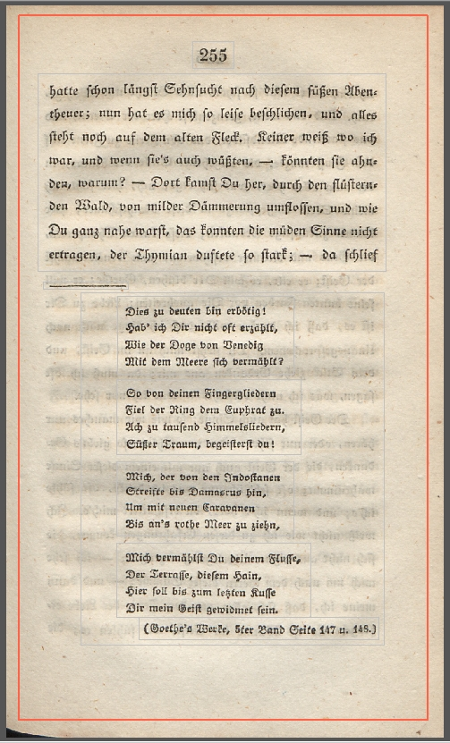

Seitenrand (Border)
Der Seitenrand grenzt u. a. in der Regel den Kolumnentitel, die Seitenzahl, die Absätze bis hin zur Bogensignatur von Teilen ab, die nicht zum Text gehören u. a. den handschriftlichen Ergänzungen oder den Weißbereich. Die Markierung des Seitenrandes ist dem Satzspiegel vorzuziehen.

Beispiel mit handschriftlichen Ergänzungen. Dieses Beispiel zeigt auch eine Besonderheit, die Ergänzung "1885" ist in diesem Fall innerhalb der Seite mit eingefasst.